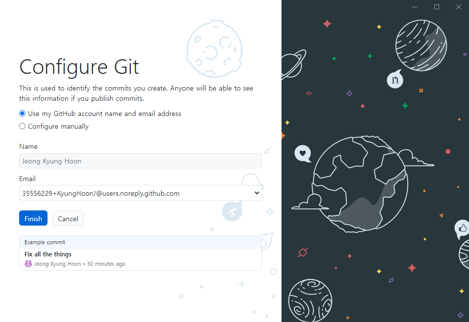
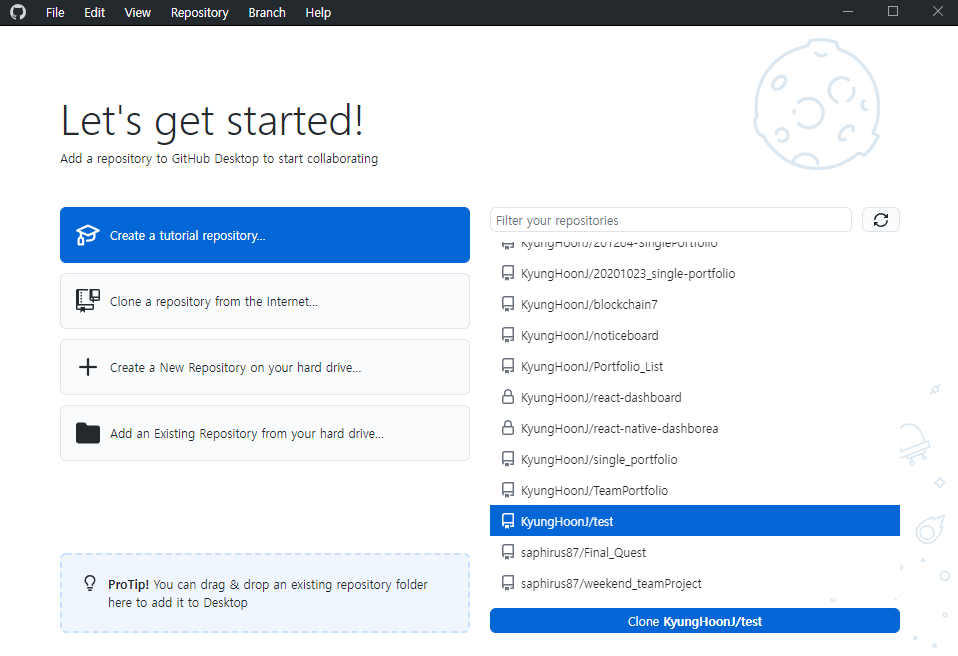
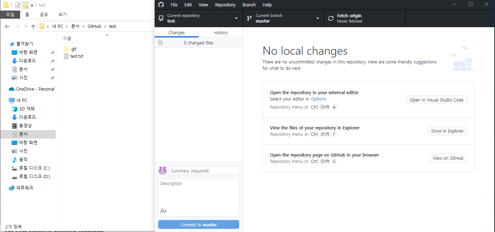
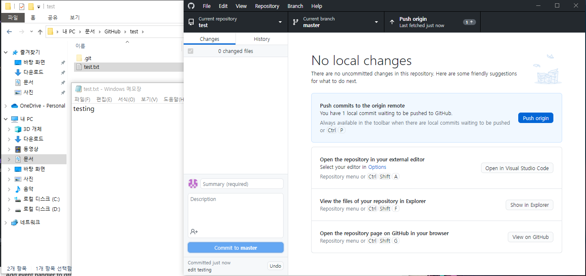
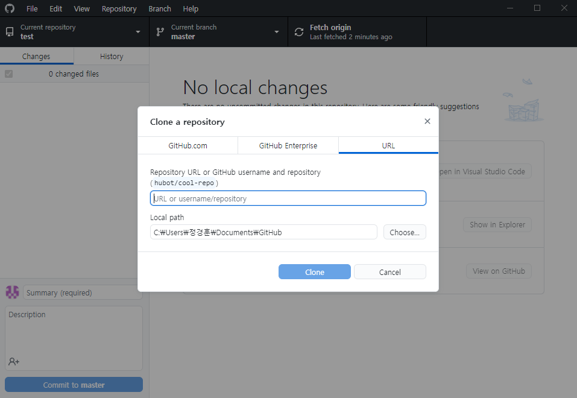
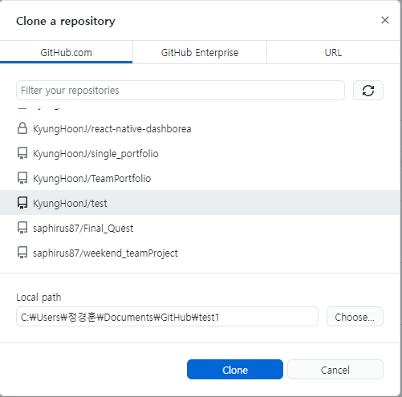
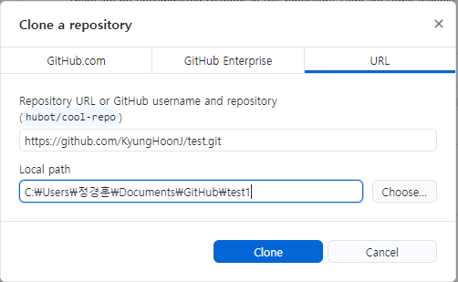
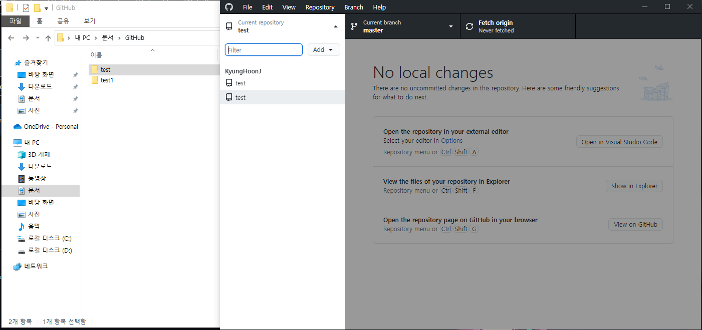
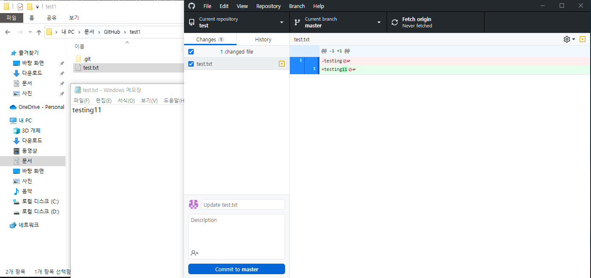
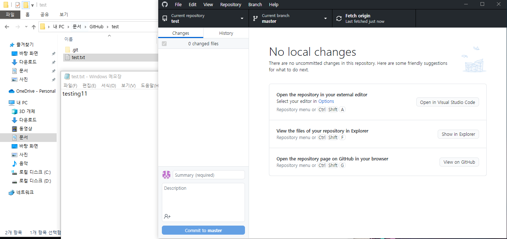

Github Desktop 웹페이지이다.
Download for Windows 버튼을 클릭해
파일을 다운받는다.
다운 받은 파일을 실행하면 해당 스크린샷과 같이 노출된다.
Sign in to GitHub.com 버튼을 클릭 시 로그인 화면으로 이동한다.

로그인을 완료하면 스크린샷과 같이 노출된다.
좌측의 Clone a repository
from the Internet 버튼을 클릭하면 원격 저장소를 복사할 수 있다.
우측의
원격 저장소 목록 중 원하는 원격 저장소를 클릭 후 아래의 Clone 버튼을
클릭해 원격 저장소를 복사할 수 있다.
URL 탭에서는 복사할 Github 주소와 로컬 저장소 위치를 설정한다.
클론 생성 후 로컬 저장소를 확인 가능하다.
파일을 수정 시 왼쪽 목록 중 Changes 탭에서 확인할 수 있다.
체크
박스에 체크하면 add를 진행한 것이다.
반대로 체크를 해제하면 add를
하지 않는다.
아래의 Commit to master 버튼 위에 메세지를 입력할 수 있다. 버튼을 클릭하면 commit을 진행한다.

commit 후에 위 버튼 3개중 제일 우측 버튼이 push로 바뀐다.
해당 push
버튼을 클릭 시 원격 저장소에 로컬 저장소의 내용을 저장한다.
push를 완료하면 fetch 버튼으로 돌아온다.
fetch는 원격 저장소에서
변경된 내역을 받아온다.
내용이나 파일을 받아오는 것이 아닌 log
내역만을 가져온다.

상단의 File 메뉴에서 새로운 클론을 생성할 수 있다.
위와 마찬가지로 원하는 주소와 로컬 위치를 입력한다.
GitHub.com 탭에서는 원격 저장소를 바로 선택할 수 있다.
로컬 위치가 이미 있기 때문에 다른 로컬 주소를 입력한다.
로컬 저장소가 2개가 된 것을 확인할 수 있다.
2번째 로컬 저장소의 파일을 수정한다.
commit, push를 진행한다.
1번째 로컬 저장소의 파일을 확인한다.
변하지 않은 것을 확인할 수 있다.
fetch 버튼을 클릭 시 pull 버튼으로 변경된다.

pull 버튼 클릭 시 로컬 저장소의 내용이 원격 저장소의 내용으로 수정된다.
단,
파일을 닫았다 열어야한다.